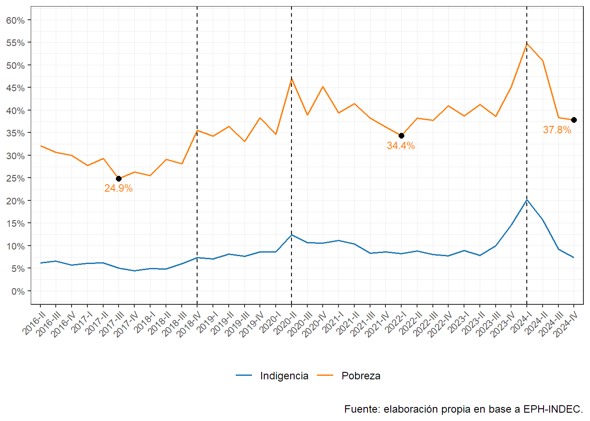
Introducción
En el presente informe realizamos un balance preliminar de la evolución de los ingresos y la pobreza en el primer año de gobierno de La libertad Avanza. Luego de un aumento inusitado de la pobreza a fines del 2023 y comienzos del 2024, producto de la devaluación del peso y su efecto sobre la inflación, en el segundo semestre de 2024 se observó una tendencia inversa. La inflación disminuyó y los ingresos monetarios de las personas se recuperaron, teniendo como correlato una baja en la tasa de pobreza y un retorno de los indicadores económicos a niveles similares a 2023.
Sin embargo, luego de semejante vaiven socioeconómico en un corto plazo, es relevante indagar sobre quiénes fueron aquellos que salieron rápidamente de la pobreza y recuperaron con mayor fuerza sus ingresos. Una hipótesis que puede plantearse es que dicha recuperación fue exclusiva de ciertos grupos pertenecientes a la clase media y trabajadora formalizada, que, a pesar de su mayor exposición al deterioro en las condiciones de vida a comienzos del año pasado, su posicionamiento en la estructura ocupacional (segmentos formales de la economía) les permitió salir rápidamente de la pobreza. En este sentido, en este informe hacemos foco en dicho aspecto, identificando las desigualdades que se esconden entre grupos, sectores y clases cuando solo observamos tasas y promedios.
Tendencias generales de la pobreza
La pobreza en los últimos 9 años fue escalando hacia niveles más altos, aunque con oscilaciones. Siempre, luego de aumentos abruptos en el número de hogares en dicha situación, vinieron períodos de relativo descenso que fueron estableciendo pisos que los sucesivos gobiernos, mediante las políticas económicas y sociales implementadas, no pudieron volver a perforar. Así, al aumento inicial de la pobreza en el gobierno de Cambiemos, derivado del incremento en las tarifas públicas y la devaluación del dólar, le siguió un descenso sostenido hasta fines de 2017 (25%), marcando el piso más bajo de todo el período.
Posteriormente, dos shocks generaron las condiciones para que la pobreza crezca rápidamente: la crisis de deuda en 2018, y su posterior salida devaluatoria, y la crisis generada por la pandemia del COVID-19. Desde ese último hito, se transitó un camino de descenso en los niveles de pobreza, que con sus oscilaciones marcó un segundo piso de un 34%. Ya más cerca de nuestros días, entre finales de 2023 y comienzos de 2024, el cambio en la política económica llevado adelante por el gobierno de La Libertad Avanza, que se inauguró con una fuerte devaluación del peso, impulsó a que un 55% de la población se encontrará en la pobreza. Sin embargo, durante 2024, se logró retornar a los valores previos de pobreza de 2023 (37,8%). Los interrogantes iniciales que pueden plantearse son varios, pero pueden sintetizarse en dos: ¿Es ese valor cercano al 38% un nuevo piso de pobreza? ¿Qué grupos poblacionales fueron los que más rápido se recuperaron, en un contexto de baja de la inflación?
En la Figura 1 mostramos la evolución de la tasa trimestral de pobreza e indigencia, señalando con puntos negros los pisos que se han establecido en cada administración política y en línea punteada los principales picos de las tasas.
Otra forma de observar el derrotero de la pobreza es analizar la distancia que presentan las personas respecto a la línea que establece que hogar es o no pobre. De este modo, la Figura 2 muestra una estratificación de la sociedad según cuán distantes están las personas de la canasta básica de pobreza. Así, en amarillo, encontramos a las personas que presentan ingresos familiares que duplican el valor de la canasta y que fueron descendiendo a lo largo de los años, alcanzando el valor de 27% a fines de 2024%. Por el contrario, los valores más oscuros (negros y violetas) definen a las personas que se encuentran por debajo de la canasta básica total (CBT) y que aumentaron fuertemente a comienzos de 2024 y, posteriormente, retornaron a los niveles anteriores.
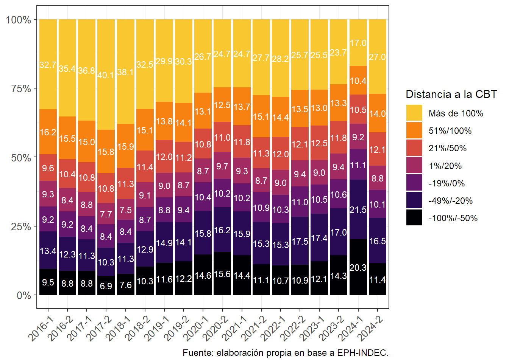
Estrategias de los hogares e ingresos
En esta sección revisaremos la evolución de los ingresos y de las estrategias de los hogares según clases sociales y ramas de actividad. En primer lugar, observamos en la Figura 8 que los ingresos laborales reales se han recuperado, en promedio (línea punteada), a partir del segundo trimestre de 2024. Sin embargo, esta recomposición no tuvo la misma fuerza en todas las clases. Mientras que para las clases propietarias y directivas, las mejoras fueron sustanciales, para el resto de las clases los niveles de vida retornaron a los de mediados de 2023.
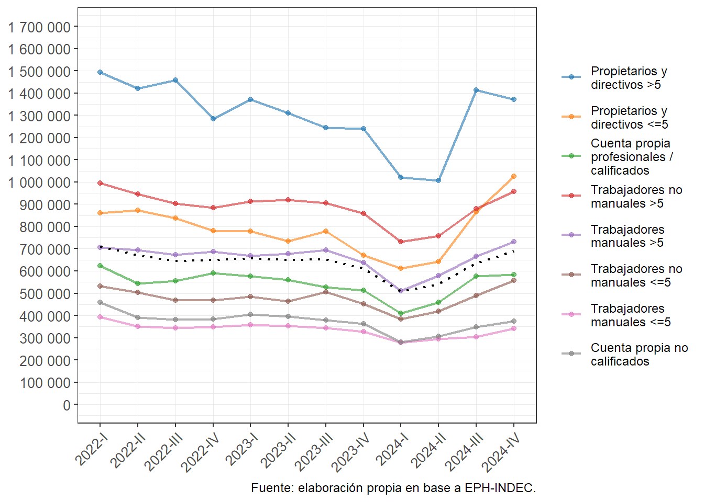
Otro abordaje puede realizarse haciendo foco en la distribución de la evolución del ingreso según rama de actividad. Como se observa en la Figura 9, tomando la última información disponible del cuarto trimestre de 2024 y comparando con el tercer trimestre de 2023, los ingresos laborales, en promedio, mejoraron un 6%. En naranja se exponen las ramas con mayor peso poblacional, destacándose la mejora relativa en transporte y almacenamiento, industria manufacturera y comercio, pero lejano del crecimiento experimentado por los sectores ligados a la agricultura y ganadería, los servicios profesionales e inmobiliarios. En contraposición, las ramas que no experimentaron mejoras en el período fueron las ligadas a la administración pública, el empleo doméstico y fundamentalmente la enseñanza.
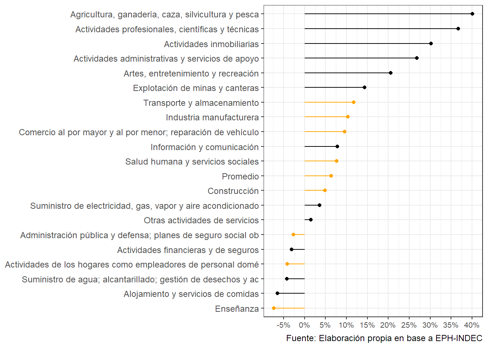
A continuación, mostramos la distribución de la mediana de ingresos laborales para cada rama de actividad, sirviendo de complemento del gráfico anterior. Nuevamente en naranja, se identifican los gremios con mayor peso en la estructura ocupacional.
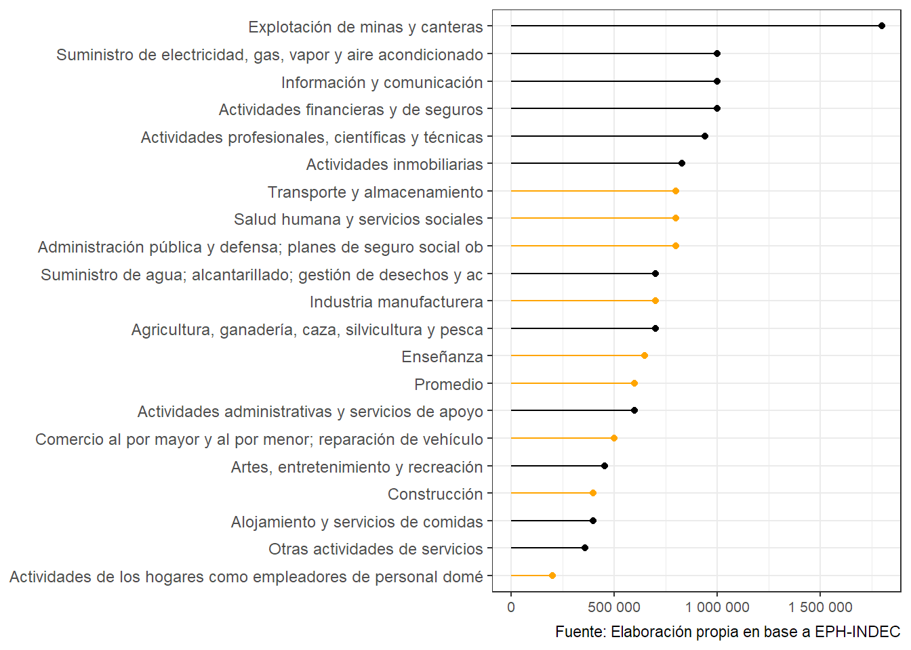
Cambiando de dimensión de análisis, si nos centramos en los hogares, pueden identificarse determinadas prácticas económicas a las que las personas acuden en momentos de crisis. En promedio, un 16% de los hogares suelen indicar que hacen uso de sus ahorros para solventar las necesidades diarias en los últimos tres meses al momento de la encuesta (Figura 11). Como puede observarse, esta práctica alcanzó sus picos al inicio de la pandemia y en el primer trimestre de 2024, en el contexto de devaluación cambiaria y fuerte crecimiento de la inflación. Posteriormente, los valores descendieron pero estableciéndose por encima del promedio, cerca del 19%.
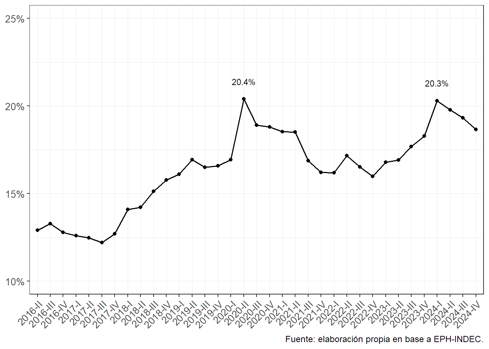
El análisis de la evolución del pluriempleo (definido como la proporción de ocupados con más de un empleo) revela un fenómeno estructural creciente en el mercado laboral argentino. Los datos muestran que, en el cuarto trimestre de 2024, se alcanzó el valor máximo de la serie histórica (12,2%), equivalente a 1,6 millones de trabajadores que recurren a múltiples ocupaciones para compensar la insuficiencia de ingresos de su empleo principal (Figura 12). Este registro no solo supera las cifras del año anterior, sino que consolida una tendencia alcista desde 2016, cuando la tasa se situaba en 9,1%. El incremento sostenido del pluriempleo sugiere dos dinámicas interrelacionadas. En primer lugar, un deterioro del poder adquisitivo de los salarios, evidenciado por la necesidad de complementar ingresos ante la erosión de la capacidad de consumo (como lo confirman indicadores como Capacidad de compra de canasta), y en segundo lugar, una flexibilización encubierta del mercado laboral, donde la multiplicidad de empleos opera como mecanismo de adaptación a la precarización. Este fenómeno adquiere especial relevancia en contextos de crisis, donde los hogares enfrentan mayores dificultades para cubrir necesidades básicas con sus ingresos. El pluriempleo récord en 2024 refleja fallas en la generación de empleo de calidad y en la protección social, con implicancias para el bienestar laboral y la productividad.
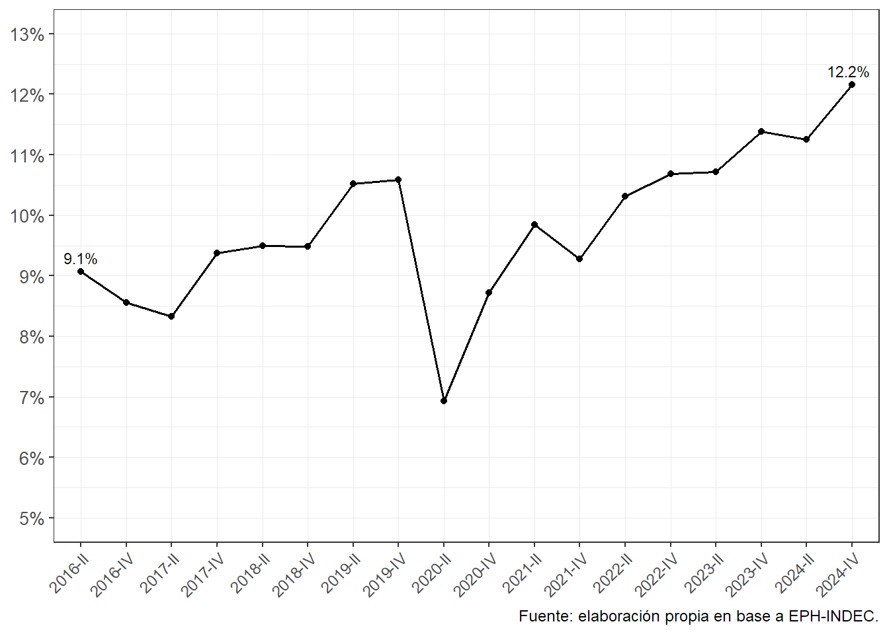
Capacidad de compra de los ingresos
Con el objetivo de poder medir de manera precisa la capacidad de compra de los ingresos de diferentes segmentos de la población, se construyó el indicador Capacidad de compra de los ingresos a partir del cual se calcula la cantidad de canastas (de hogar o individuales) que pueden comprarse con los ingresos corrientes de los hogares y de las personas (ingresos laborales y jubilaciones por ejemplo). El análisis de la evolución de este indicador a lo largo de la serie que inicia en 2016 permite ver el deterioro de ingresos ocurrido en los últimos años, especialmente en el último año. Para la población en general, el resultado muestra que entre 2016-2024, los hogares argentinos pasaron de poder adquirir, en promedio, 2,01 CBT a solo 1,52 CBT (-24%) (ver Figura 13).
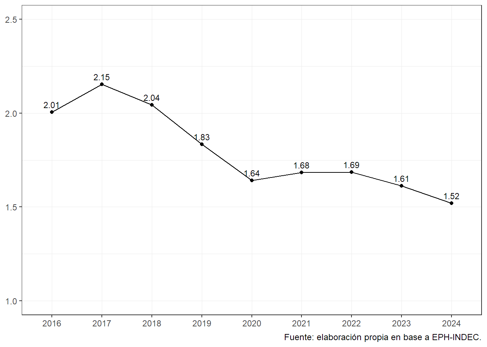
El indicador capacidad de compra de los ingresos para los hogares NO pobres muestra la cantidad de canastas (calculada para cada hogar) que puede comprar los hogares no pobres con sus ingresos totales y su evolución entre 2016-2024. El resultado muestra que entre 2016-2024, los hogares NO POBRES argentinos pasaron de poder adquirir, en promedio, 2,62 CBT a solo 2,29 CBT (-13%).
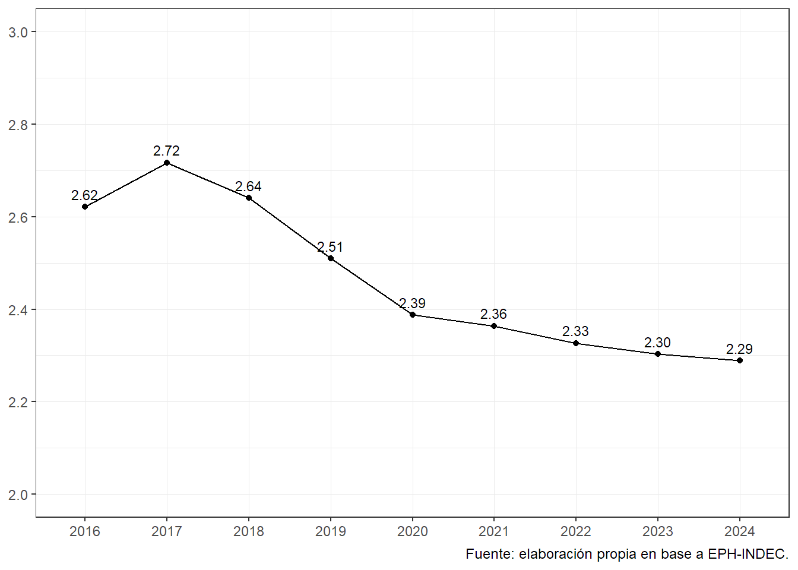
El indicador capacidad de compra de los ingresos para los asalariados muestra la cantidad de canastas individuales que pueden comprar los asalariados en base a los ingresos de su ocupación principal. Los resultados muestran que la capacidad de compra del conjunto de los asalariados se encuentra en el nivel más bajo de la serie desde 2016. Mientras que en el año 2016 los asalariados, en promedio, podían comprar 2,9 canastas individuales, en el último trimestre de 2024 esta capacidad se ha reducido a 2,1 (mostrando un desplome del 28% entre 2016 y 2024).
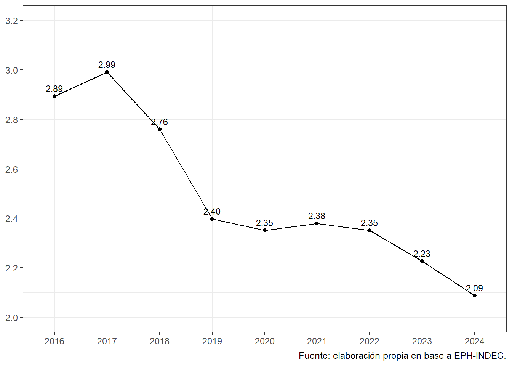
Al analizar la capacidad de compra de los ingresos de los asalariados considerando la calidad del empleo, se observa que tanto los formales como los informales empeoraron su situación. Entre 2016-2024 los formales cayeron de 3,84 a 2,81 (-27%) y los informales de 1,66 a 1,17 (-30%).
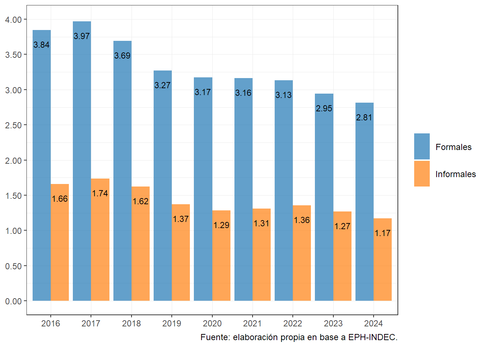
En la evolución de la capacidad de compra de los asalariados formales según rama de actividad puede observarse la heterogeneidad del impacto en los diferentes sectores (Figura 17). Sin embargo, la tendencia del deterioro de ingresos afecta al conjunto de las ramas. Al analizar la evolución de la capacidad de compra de los asalariados formales de las ramas ligadas al sector privado como industria manufacturera, comercio, construcción y alojamiento y servicio de comidas (las cuales representan cerca del 40% del total de ocupados) se observa una tendencia negativa en la capacidad de compra de sus salarios. La rama que más empeoró la capacidad de sus ingresos en el periodo 2016-2024 es Alojamiento y servicios de comida ya que registra una pérdida de 31% en su capacidad de compra, le sigue Industria manufacturera registrando una pérdida de 25%, Comercio del 22% y Construcción del 19%. Los asalariados formales de la rama Alojamiento y servicios de comida en 2016 podían comprar 2,8 canastas individuales y ahora en 2024 pueden comprar 1,9, registrando una baja del 31% de sus ingresos en términos relativos. Los asalariados formales de la industria manufacturera también registran un deterioro importante de sus ingresos en relación a la capacidad de compra. En 2016 podían comprar 3,8 canastas individuales y ahora en 2024 pueden comprar 2,8 (-25%). Por su parte, los asalariados formales de la rama construcción sufrieron un deterioro de su capacidad de compra del 19%. En 2016 podían comprar 3,1 canastas individuales con sus ingresos laborales de la ocupación principal y actualmente pueden comprar 2,5. Lo mismo se observa en los asalariados formales de la rama Comercio, quienes en 2016 podían comprar en promedio 3,4 canastas individuales y ahora pueden comprar 2,7 (-22%)
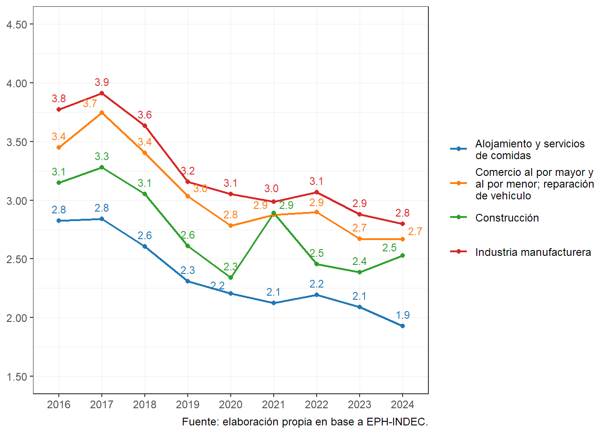
Al analizar la evolución de la capacidad de compra de los asalariados formales de las ramas ligadas al sector público como Administración Pública, Enseñanza y Salud se observa que el deterioro salarial es significativamente más profundo que en las ramas asociadas al sector público. La Figura 18 presenta la trayectoria del indicador de capacidad de compra de los ingresos (que mide la cantidad de canastas básicas individuales adquiribles con los ingresos laborales de la ocupación principal de los asalariados) en tres ramas clave del sector público: enseñanza, salud y administración pública. Los datos revelan un deterioro sostenido de la capacidad adquisitiva en estas actividades entre 2016 y 2024, con una caída generalizada desde valores cercanos a 3,6-4,6 canastas a inicios del período hasta rangos de 2,4-3 hacia 2024. Este descenso, particularmente abrupto a partir de 2023, sugiere un efecto combinado de la erosión salarial real frente a la inflación y ajustes heterogéneos por sector. La rama de enseñanza exhibe el mayor deterioro. La contracción del indicador, especialmente pronunciada en el último año, subraya la vulnerabilidad económica de los asalariados públicos, cuya capacidad de consumo se ha visto comprometida de manera crítica, con implicancias para su bienestar y la calidad de los servicios esenciales.
Importante
Entre los sectores más afectados por la pérdida de capacidad adquisitiva de los ingresos destacan la enseñanza y la salud, ambos caracterizados por una elevada feminización de su fuerza laboral, con porcentajes de trabajadoras mujeres del 75% y 69%, respectivamente. A estos se suma el servicio doméstico, sector históricamente precarizado que presenta la tasa de informalidad más alta del mercado laboral argentino (77%), los salarios más bajos y una composición de género prácticamente exclusivamente femenina (98%).
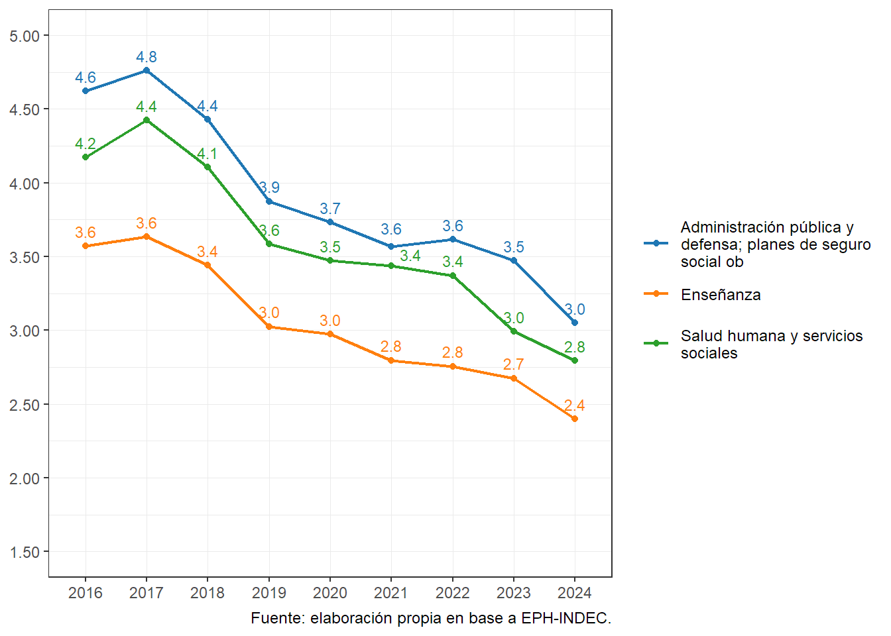
El indicador capacidad de compra de los ingresos, en este caso, calcula cuántas canastas básicas individuales puede adquirir un jubilado con su haber jubilatorio. La Figura 19 revela un colapso sostenido de la capacidad adquisitiva de los adultos mayores en Argentina. La serie temporal (2016-2024) muestra que los jubilados pasaron de poder adquirir 2,8 canastas básicas en 2017 a apenas 1,5 canastas en 2024, lo cual representa una caída del 46% en términos reales. La caída fue más pronunciada que en otros grupos (por ejemplo asalariados formales: -27%), evidenciando una doble vulnerabilidad de los jubilados: por edad y por dependencia de ingresos fijos no indexados. Cabe destacar que, en promedio, los adultos mayores de 65 años cobran $438 mil pesos mensuales de jubilación (equivalente a 368 USD mensuales3).
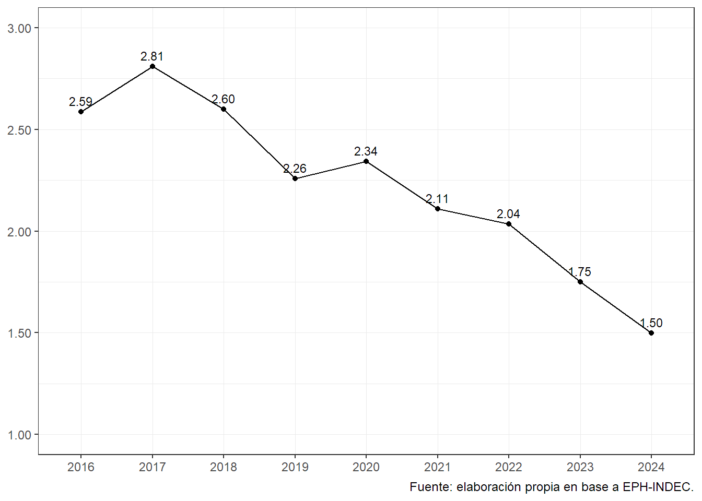
Trayectorias de salida de la pobreza
El análisis del panel de la EPH, es decir de las personas que fueron encuestadas durante dos trimestres consecutivos, permite ver la trayectoria de los individuos y hogares que cambiaron su situación de pobreza entre el segundo y tercer trimestre de 2024, pasando de ser pobres a ser no pobres, identificando algunos factores explicativos de dicha trayectoria.
En coincidencia con los datos analizados hasta aquí, el análisis del segmento de los que salieron de la pobreza muestra entre sus principales resultados que dentro de ese grupo creció la proporción de ocupados, aumentó la cantidad de ocupados por hogar, creció el pluriempleo, aumentó la proporción de sobreocupados, aumentó el promedio de hs semanales trabajadas y aumentó la informalidad.
Si consideramos la trayectoria ocupacional de los que salieron de la pobreza, resulta relevante señalar que 1 de cada 5 personas que pasaron de estar inactivos a estar ocupados son adultos mayores de 65 años. En síntesis, el análisis del segmento de quienes salieron de la pobreza entre el segundo y el tercer trimestre de 2024 muestra que lo lograron especialmente a través de incrementar horas de trabajo (sobreocupación), sumar ocupaciones (pluriempleo) e incorporar más miembros del hogar al mercado de trabajo.
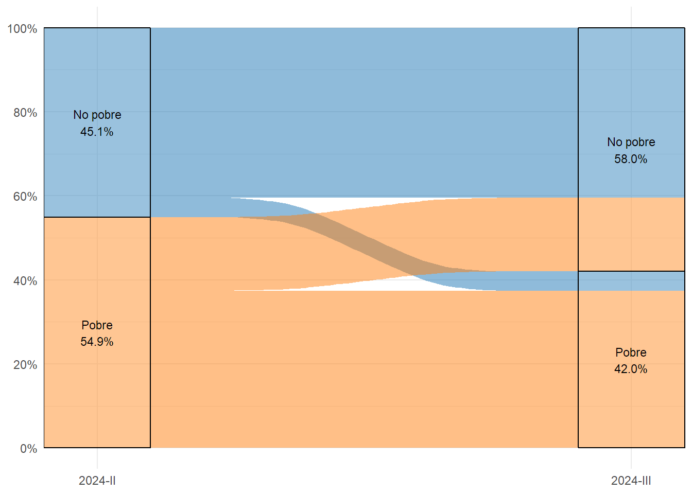
Advertencias metodológicas
Como último punto nos interesa retomar la discusión metodológica que frecuentemente se plantea en torno a la medición oficial de la pobreza con la EPH y que ha ganado más énfasis en el último año a raíz del rápido aumento y dismución en un corto período de tiempo. Parte de esta discusión puede encontrarse ampliada en Schteingart (2025) y Tornarolli (2024).
En primer lugar, nos interesa remarcar el importante crecimiento que se continua observando respecto a la proporción de personas que no responden sobre sus ingresos en la encuesta. En el último trimestre de 2024, el 20% de los ocupados no declararon ingresos laborales en su ocupación principal (P21) y el 22% no declararon ingresos laborales totales (P47T). A su vez, como se observa en la Figura 22, la proporción de personas que no declaran ingresos se distribuye diferencialmente por clase social, siendo los sectores superiores los que presentan una tasa de no respuesta superior (28%).
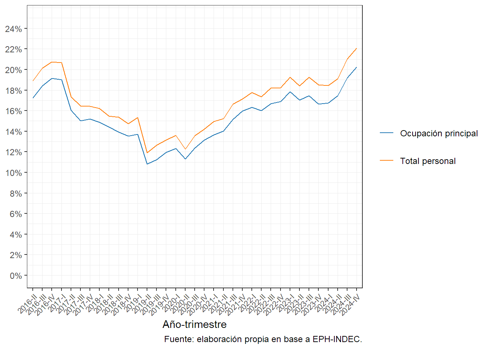
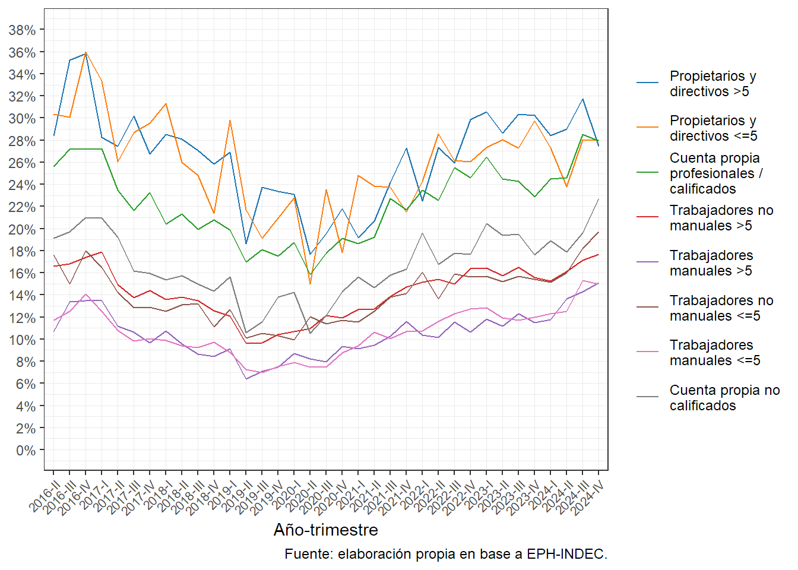
Otra cuestión metodológica que ha permeado en la opinión pública es respecto a la validez de la canasta básica utilizada para ir actualizando el valor de la canasta básica alimentaria (CBA) y la canasta básica total (CBT) a partir de la cual se mide la pobreza. Actualmente el INDEC pondera el peso de cada bien y servicio que compone el índice de precios al consumidor (IPC) a partir de la Encuesta Nacional de Gastos de los Hogares (ENGHo) 2004-2005 ajustada a precios relativos de 2016. A diferencia del INDEC, el Instituto de Estadísticas y Censos de la Ciudad Autónoma de Buenos Aires (IDECBA) desde 2022, actualiza la CBA y la CBT a través de un IPC propio que toma como ponderadores de referencia a la estructura de gastos derivada de la ENGHo 2017-2018. En este sentido, las canatas del IDECBA serían más cercanas a la estructura de consumo actual.
Para analizar la existencia de diferencias entre ambas formas de medir la pobreza, utilizando las bases usuarias de la Encuesta de Ocupación, Trabajo e Ingresos (ETOI) de la CABA, utilizamos la valorización de las canastas siguiendo la metodología del IDECBA y la del INDEC (Figura 23).
En este sentido, la pobreza y la indigencia no solo muestran porcentajes distintos de acuerdo a cómo son valorizadas, existiendo una brecha de casi 6 pp. en el primer caso, con mayor fuerza desde 2024, sino que también denotan ciertos matices respecto a su evolución. Utilizando la CBT de INDEC, la pobreza en la CABA hacia fines de 2024 alcanzaba valores casi similares a los de comienzos de 2022, mientras que utlizando la CBT de IDECBA, la pobreza hacia fines de 2024 es algo inferior al tercer trimestre de 2023.
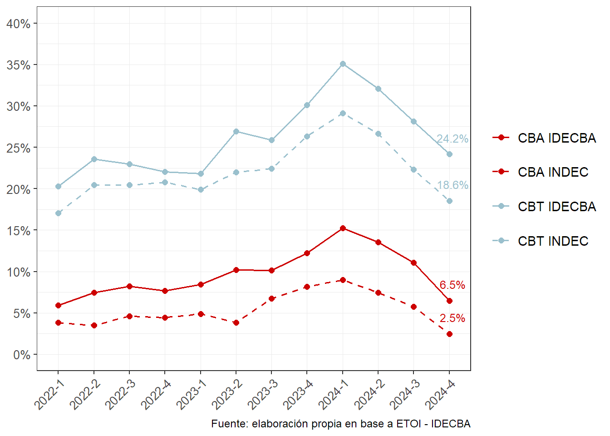
Por último, hemos hecho una revisión de otras fuentes de datos que registran la evolución de ingresos, para evaluar así, la consistencia de los resultados arrojados por la EPH. De esta forma, a partir de la información del Sistema Integrado Previsional Argentino (SIPA), en donde se registran los ingresos laborales de todos los trabajadores formales, hemos comparado cómo evoluciona dicha variable en relación a su medición en la EPH, para el sector privado asalariado.
Así es que en la Figura 24, se observa que la brecha de ingresos promedio de los asalariados del sector privado entre SIPA y EPH, siempre es favorable al registro administrativo, pero en el último período dicha distancia se ha achicado relativamente, lo que podría estar explicando una mejor captación de los ingresos declarados por parte de la EPH.
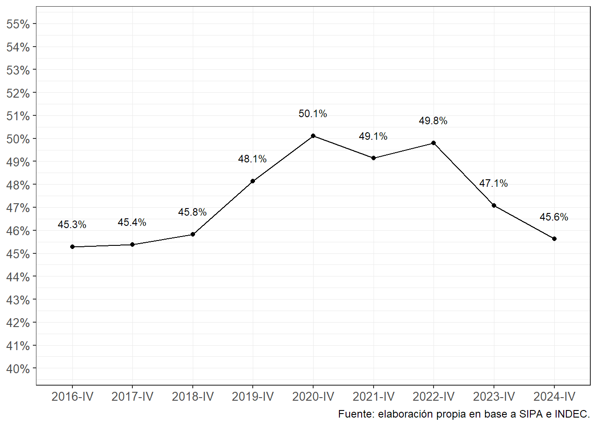
Conclusiones
En un contexto social marcado por una desaceleración inflacionaria en comparación con 2023, se configuran dinámicas particulares en la estructura social argentina. El análisis de la pobreza desde su dimensión de umbral adquiere relevancia metodológica, ya que permite evaluar tanto su evolución temporal como su comparación intersectorial, ofreciendo así una perspectiva crítica sobre los efectos de las políticas gubernamentales en la estructura social.
Mientras la tasa de pobreza muestra fluctuaciones cíclicas, con una aparente recuperación hacia fines de 2024 (37,8%) tras el pico del 55%, los pisos de pobreza se redefinen progresivamente hacia niveles más altos. Este patrón, lejos de reflejar una mejora sostenible, consolida una estructura de empobrecimiento donde cada crisis eleva el umbral de exclusión social.
El reciente descenso de la pobreza no se ha visto acompañado por un crecimiento en el bienestar y en la capacidad de compra. Si bien se evidenciaron leves mejoras en los ingresos laborales durante el año 2024, estas fueron desiguales e insuficientes. La destrucción de empleo formal (particularmente en el sector privado registrado) no ha sido compensada por la creación de puestos de calidad, sino por la expansión del cuentapropismo precario y la informalidad laboral.
Los datos expuestos evidencian que, bajo el argumento del “ordenamiento macroeconómico”, se ha configurado un escenario en el cual el congelamiento real de los salarios ha operado como un mecanismo de empobrecimiento masivo, reduciendo los ingresos laborales en términos reales entre un 24% y un 30 %, según el sector. Más allá de las advertencias que es necesario tomar en cuenta, para contextualizar la caída de la pobreza: aumento de la no respuesta, mayor declaración de ingresos en la EPH, distancia de datos más pronunciada con los datos del IDECBA en la comparación para la Ciudad de Buenos Aires.
Hemos analizado la brecha entre los ingresos familiares y el umbral de pobreza. Los hogares con ingresos que duplican la canasta básica (el grupo más favorecido) disminuyeron con el tiempo, representando solo el 27% a fines de 2024. En cambio, aquellos por debajo de la canasta básica aumentaron abruptamente a inicios de 2024, reflejando una crisis temporal, pero luego retrocedieron a niveles anteriores, indicando una recuperación parcial sin resolver las vulnerabilidades estructurales.
Al analizar la distribución de la pobreza por grupos sociales en la población ocupada (2023-2024), se observa que su evolución fluctúa simétricamente en cada trimestre. Las clases trabajadoras más vulnerables fueron las más afectadas (siempre por encima del promedio), mientras que los sectores con mayor formalización y calificación —como pequeños empresarios, trabajadores manuales y no manuales de grandes empresas— mostraron una recuperación más marcada.
Nuestro informe muestra además que bajo el gobierno de Javier Milei, la pobreza entre jubilados alcanzó su nivel más alto en años, con un incremento del 50,3% interanual, lo que significa que 1 de cada 5 jubilados es pobre y que 290 mil personas mayores cayeron en la pobreza en el último año.
El análisis de su evolución desde 2016 hasta 2024 expone un deterioro acumulado y acelerado del poder de compra: si en 2016 un hogar promedio podía acceder a 2,01 CBT, hacia 2024 esta cifra se redujo a 1,52 CBT, marcando una pérdida del 24% en la capacidad adquisitiva. Esta contracción, particularmente intensa en el último año, refleja no solo el impacto de la inflación y las crisis recurrentes, sino también el fracaso de las políticas de ingresos para proteger el poder adquisitivo de la población. El dato es alarmante: implica que, en términos reales, los hogares hoy pueden comprar casi un cuarto menos de bienes y servicios esenciales que hace ocho años, profundizando las desigualdades y la vulnerabilidad social.
Al desagregar los datos de ingresos laborales por rama de actividad entre el tercer trimestre de 2023 y el cuarto trimestre de 2024, surge una historia de dos Argentinas económicas. Mientras el promedio nacional anuncia un esperanzador crecimiento del 6%, la realidad se fragmenta en trayectorias radicalmente distintas según el sector en el que se trabaje.
Los motores más visibles de esta recuperación: transporte y almacenamiento, industria manufacturera y comercio muestran pulsos de vida, aunque modestos. Pero son la agricultura, ganadería y los servicios profesionales e inmobiliarios los que realmente marcan el ritmo, beneficiados por los vientos favorables de los precios internacionales y la demanda de sectores acomodados. Sin embargo, al otro lado del espejo, tres sectores claves para la estructura social argentina aparecen como los grandes perdedores de este reparto desigual. La administración pública - víctima de sucesivos ajustes -, el empleo doméstico - eternamente postergado en la informalidad - y especialmente la enseñanza, conforman el triste podio de los abandonados. Que justamente la educación figure entre los sectores con peor desempeño no es un dato menor: habla de una sociedad que, en medio de la crisis, parece estar descuidando una de sus bases fundamentales.
Tras el 6% de incremento promedio en los ingresos laborales, se revela una situación socioeconómica preocupante: los trabajadores argentinos están sosteniendo su subsistencia mediante el deterioro de su calidad de vida, sacrificando tiempo personal, bienestar físico y reservas económicas. Un análisis territorial evidencia patrones recurrentes: docentes que complementan sus ingresos con clases particulares, personal sanitario que extiende sus jornadas con turnos adicionales, y empleados comerciales que recurren a plataformas digitales para generar ingresos extras. Lo que antes constituía una estrategia excepcional, hoy se ha normalizado como mecanismo de supervivencia.
Paralelamente, se observa un progresivo agotamiento de los recursos familiares. Los ahorros, que tradicionalmente funcionaban como amortiguadores ante crisis coyunturales, se han convertido en fondos de subsistencia inmediata. Instrumentos financieros básicos como plazos fijos han perdido valor real frente a la presión inflacionaria, principalmente en los alimentos. Este escenario ha impulsado un mercado secundario activo, donde bienes patrimoniales (vehículos, equipos electrónicos, mobiliario) se liquidan para cubrir necesidades básicas, evidenciando una dinámica económica motivada por la urgencia más que por la oportunidad.
Lejos de representar una genuina recuperación, este panorama refleja un frágil equilibrio sostenido mediante la sobreexplotación laboral y el desgaste del capital familiar. Los indicadores macroeconómicos, aunque positivos en términos agregados, ocultan una realidad microeconómica donde los hogares incrementan su esfuerzo productivo sin lograr mejorar su posición relativa.
La sostenibilidad de este modelo resulta cuestionable. Mientras las estadísticas oficiales en forma general y sintética, registran mejoras porcentuales, el análisis más profundo no señala con claridad un mejor bienestar, a tal punto que casi el% de lapoblación es ´pobre por ingresos actuañlmente, y los indicadores sociales cualitativos -desde el aumento de trastornos por estrés laboral hasta la reducción del consumo básico- pintan un cuadro menos alentador. Esta divergencia entre datos formales y experiencias cotidianas plantea interrogantes sobre la verdadera naturaleza del actual proceso económico.
Referencias
Schteingart, D. (2025, abril 6). Pobreza: ¿realmente bajó o estamos midiendo mal la inflación? Cenital. https://cenital.com/realmente-bajo-la-pobreza-en-2024-o-estamos-midiendo-mal-la-inflacion/
Tornarolli, L. (2024). Sobre la evolución de la pobreza en Argentina en 2024.